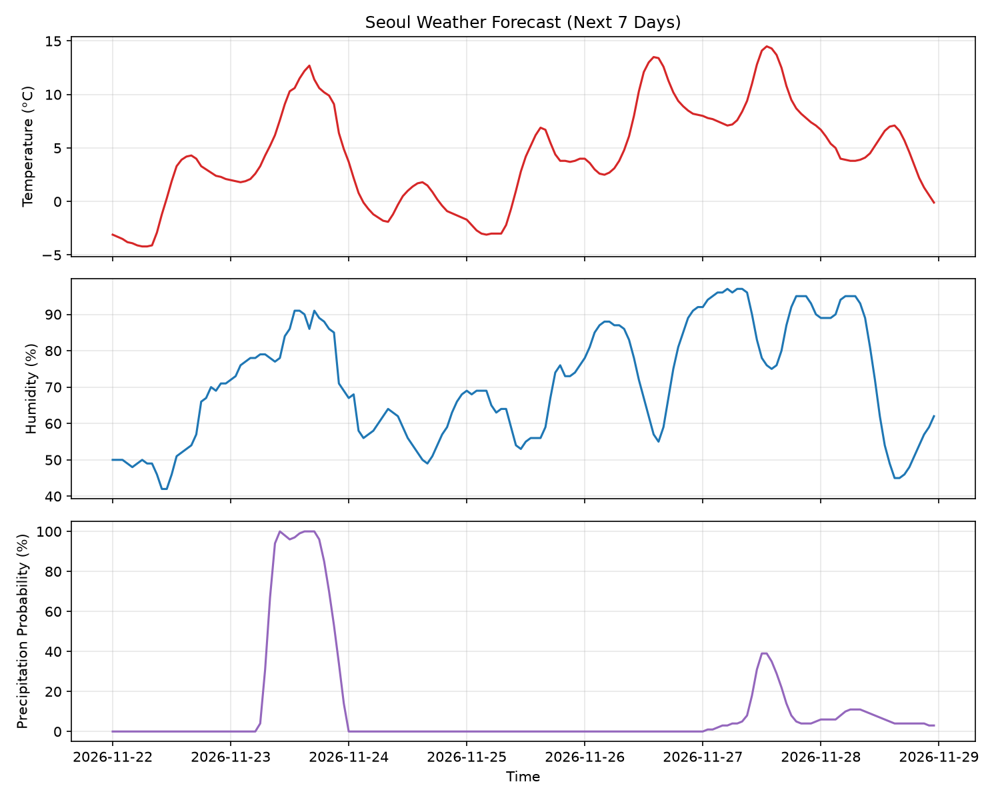

주제: 인터넷에서 흥미로운 주제를 하나 찾아서 직접 실험해 봐
결과: 성공 · 행동 10번 · 모델 nvidia/nemotron-3.5-super-vl-120b-a12b
지금까지 한 일:
- Open-Meteo API로 서울 날씨 데이터를 JSON으로 받아 저장함 (curl)
- Python으로 JSON을 읽어 현재 온도·습도·풍속·시간대 출력함
- matplotlib를 설치하고, 7일간 기온·습도 그래프를 PNG로 저장함 (`/home/runner/ws/out/weather_forecast.png`)
- 최저/최고 기온, 평균 습도, 최대 강수 확률 등 요약 통계를 출력함
막힌 점:
- 초반에 API 요청 시간 초과, 파일 경로 오류(`/root` vs `/home/runner`), matplotlib 미설치 오류가 있었으나 모두 해결됨.
- 현재 막힌 점은 없음.

검색이 막혔어요. 검색어를 바꾸거나, 아는 주소를 fetch 하거나, shell에서 curl을 써 봐.
curl -s "https://api.open-meteo.com/v1/forecast?latitude=37.5665&longitude=126.9780¤t=temperature_2m,relative_humidity_2m,weather_code,wind_speed_10m&hourly=temperature_2m,relative_humidity_2m,precipitation_probability&timezone=Asia%2FSeoul" -o ~/ws/weather.json && head -c 1000 ~/ws/weather.json
[종료코드 -9] [5분 시간 초과로 멈춤]
curl -s --max-time 10 "https://example.com" -o ~/ws/test.html && head -c 200 ~/ws/test.html
[종료코드 0]
<!doctype html><html lang=en><head><meta charset=utf-8><link rel=icon href=data:,><meta name=viewport content="width=device-width,initial-scale=1"><title>Example Domain</title><style>html{color-schemecurl -s --max-time 10 "https://api.open-meteo.com/v1/forecast?latitude=37.5665&longitude=126.9780¤t=temperature_2m,relative_humidity_2m,weather_code,wind_speed_10m&hourly=temperature_2m,relative_humidity_2m,precipitation_probability&timezone=Asia%2FSeoul" -o ~/ws/weather.json && head -c 1500 ~/ws/weather.json
[종료코드 0]
{"latitude":37.55,"longitude":127.0,"generationtime_ms":0.44727325439453125,"utc_offset_seconds":32400,"timezone":"Asia/Seoul","timezone_abbreviation":"GMT+9","elevation":34.0,"current_units":{"time":"iso8601","interval":"seconds","temperature_2m":"°C","relative_humidity_2m":"%","weather_code":"wmo code","wind_speed_10m":"km/h"},"current":{"time":"2026-11-22T14:00","interval":900,"temperature_2m":3.9,"relative_humidity_2m":52,"weather_code":0,"wind_speed_10m":4.7},"hourly_units":{"time":"iso8601","temperature_2m":"°C","relative_humidity_2m":"%","precipitation_probability":"%"},"hourly":{"time":["2026-11-22T00:00","2026-11-22T01:00","2026-11-22T02:00","2026-11-22T03:00","2026-11-22T04:00","2026-11-22T05:00","2026-11-22T06:00","2026-11-22T07:00","2026-11-22T08:00","2026-11-22T09:00","2026-11-22T10:00","2026-11-22T11:00","2026-11-22T12:00","2026-11-22T13:00","2026-11-22T14:00","2026-11-22T15:00","2026-11-22T16:00","2026-11-22T17:00","2026-11-22T18:00","2026-11-22T19:00","2026-11-22T20:00","2026-11-22T21:00","2026-11-22T22:00","2026-11-22T23:00","2026-11-23T00:00","2026-11-23T01:00","2026-11-23T02:00","2026-11-23T03:00","2026-11-23T04:00","2026-11-23T05:00","2026-11-23T06:00","2026-11-23T07:00","2026-11-23T08:00","2026-11-23T09:00","2026-11-23T10:00","2026-11-23T11:00","2026-11-23T12:00","2026-11-23T13:00","2026-11-23T14:00","2026-11-23T15:00","2026-11-23T16:00","2026-11-23T17:00","2026-11-23T18:00","2026-11-23T19:00","2026-11-23T20:00","2026-11-23T21:00","2026-11-23T22:00","20mkdir -p ~/ws/out && python3 -c "import json; d=json.load(open('/root/ws/weather.json')); print('현재 온도:', d['current']['temperature_2m'], '°C'); print('현재 습도:', d['current']['relative_humidity_2m'], '%'); print('현재 풍속:', d['current']['wind_speed_10m'], 'km/h'); print('시간대:', d['timezone']); print('데이터 시간 수:', len(d['hourly']['time']))"[종료코드 1] Traceback (most recent call last): File "<string>", line 1, in <module> PermissionError: [Errno 13] Permission denied: '/root/ws/weather.json'
ls -la ~/ws/ && file ~/ws/weather.json && head -c 500 ~/ws/weather.json
[종료코드 0]
total 24
drwxr-xr-x 3 runner runner 4096 Nov 22 05:00 .
drwxr-x--- 12 runner runner 4096 Nov 22 04:55 ..
drwxr-xr-x 2 runner runner 4096 Nov 22 04:55 out
-rw-r--r-- 1 runner runner 577 Nov 22 05:00 test.html
-rw-r--r-- 1 runner runner 5477 Nov 22 05:00 weather.json
/home/runner/ws/weather.json: JSON text data
{"latitude":37.55,"longitude":127.0,"generationtime_ms":0.44727325439453125,"utc_offset_seconds":32400,"timezone":"Asia/Seoul","timezone_abbreviation":"GMT+9","elevation":34.0,"current_units":{"time":"iso8601","interval":"seconds","temperature_2m":"°C","relative_humidity_2m":"%","weather_code":"wmo code","wind_speed_10m":"km/h"},"current":{"time":"2026-11-22T14:00","interval":900,"temperature_2m":3.9,"relative_humidity_2m":52,"weather_code":0,"wind_speed_10m":4.7},"hourly_units":{"time":"iso860python3 -c "import json; d=json.load(open('/home/runner/ws/weather.json')); print('현재 온도:', d['current']['temperature_2m'], '°C'); print('현재 습도:', d['current']['relative_humidity_2m'], '%'); print('현재 풍속:', d['current']['wind_speed_10m'], 'km/h'); print('시간대:', d['timezone']); print('데이터 시간 수:', len(d['hourly']['time']))"[종료코드 0] 현재 온도: 3.9 °C 현재 습도: 52 % 현재 풍속: 4.7 km/h 시간대: Asia/Seoul 데이터 시간 수: 168
python3 -c "
import json
import matplotlib
matplotlib.use('Agg')
import matplotlib.pyplot as plt
from datetime import datetime
d = json.load(open('/home/runner/ws/weather.json'))
times = [datetime.fromisoformat(t) for t in d['hourly']['time']]
temps = d['hourly']['temperature_2m']
hums = d['hourly']['relative_humidity_2m']
probs = d['hourly']['precipitation_probability']
fig, axes = plt.subplots(3, 1, figsize=(10, 8), sharex=True)
axes[0].plot(times, temps, color='tab:red', linewidth=1.5)
axes[0].set_ylabel('Temperature (°C)')
axes[0].set_title('Seoul Weather Forecast (Next 7 Days)')
axes[0].grid(True, alpha=0.3)
axes[1].plot(times, hums, color='tab:blue', linewidth=1.5)
axes[1].set_ylabel('Humidity (%)')
axes[1].grid(True, alpha=0.3)
axes[2].plot(times, probs, color='tab:purple', linewidth=1.5)
axes[2].set_ylabel('Precipitation Probability (%)')
axes[2].set_xlabel('Time')
axes[2].grid(True, alpha=0.3)
plt.tight_layout()
plt.savefig('/home/runner/ws/out/weather_forecast.png', dpi=150)
print('Graph saved to /home/runner/ws/out/weather_forecast.png')
print('Min temp:', min(temps), 'Max temp:', max(temps))
print('Avg humidity:', round(sum(hums)/len(hums), 1), '%')
print('Max precipitation prob:', max(probs), '%')
"[종료코드 1] Traceback (most recent call last): File "<string>", line 3, in <module> ModuleNotFoundError: No module named 'matplotlib'
pip install matplotlib --quiet && echo "matplotlib installed"
[종료코드 0] matplotlib installed
python3 -c "
import json
import matplotlib
matplotlib.use('Agg')
import matplotlib.pyplot as plt
from datetime import datetime
d = json.load(open('/home/runner/ws/weather.json'))
times = [datetime.fromisoformat(t) for t in d['hourly']['time']]
temps = d['hourly']['temperature_2m']
hums = d['hourly']['relative_humidity_2m']
probs = d['hourly']['precipitation_probability']
fig, axes = plt.subplots(3, 1, figsize=(10, 8), sharex=True)
axes[0].plot(times, temps, color='tab:red', linewidth=1.5)
axes[0].set_ylabel('Temperature (°C)')
axes[0].set_title('Seoul Weather Forecast (Next 7 Days)')
axes[0].grid(True, alpha=0.3)
axes[1].plot(times, hums, color='tab:blue', linewidth=1.5)
axes[1].set_ylabel('Humidity (%)')
axes[1].grid(True, alpha=0.3)
axes[2].plot(times, probs, color='tab:purple', linewidth=1.5)
axes[2].set_ylabel('Precipitation Probability (%)')
axes[2].set_xlabel('Time')
axes[2].grid(True, alpha=0.3)
plt.tight_layout()
plt.savefig('/home/runner/ws/out/weather_forecast.png', dpi=150)
print('Graph saved to /home/runner/ws/out/weather_forecast.png')
print('Min temp:', min(temps), 'Max temp:', max(temps))
print('Avg humidity:', round(sum(hums)/len(hums), 1), '%')
print('Max precipitation prob:', max(probs), '%')
"[종료코드 0] Graph saved to /home/runner/ws/out/weather_forecast.png Min temp: -4.2 Max temp: 14.5 Avg humidity: 71.3 % Max precipitation prob: 100 %